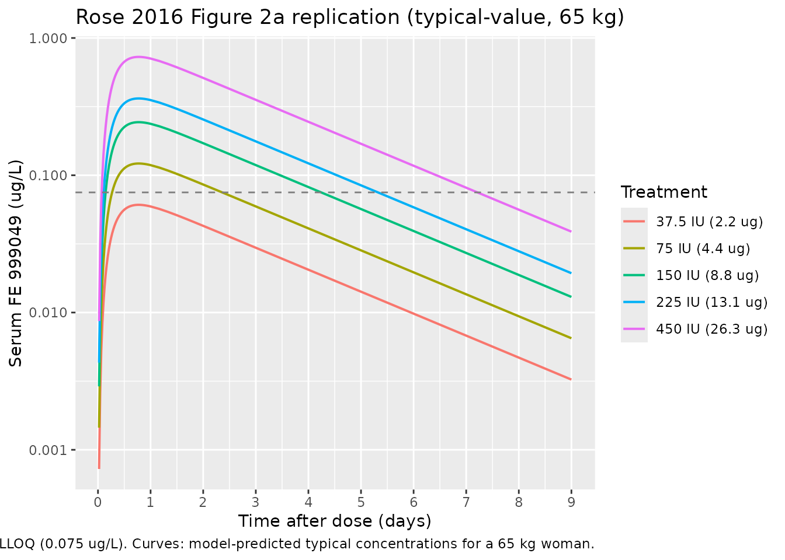
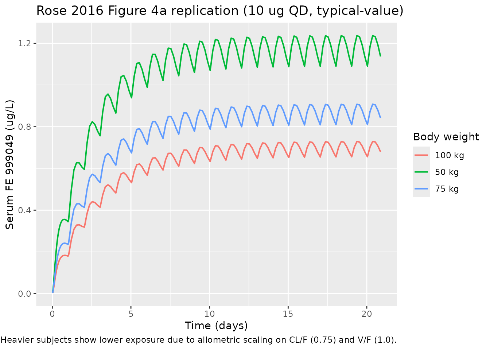

Follitropin delta / FE 999049 (Rose 2016)
Source:vignettes/articles/Rose_2016_follitropin_delta.Rmd
Rose_2016_follitropin_delta.RmdModel and source
- Citation: Rose TH, Roshammar D, Erichsen L, Grundemar L, Ottesen JT. Population Pharmacokinetic Modelling of FE 999049, a Recombinant Human Follicle-Stimulating Hormone, in Healthy Women After Single Ascending Doses. Drugs R D. 2016 Jun;16(2):173-180. doi:10.1007/s40268-016-0129-9.
- Description: One-compartment population PK model for FE 999049 (recombinant human FSH; INN follitropin delta) with first-order subcutaneous absorption through a single transit compartment and first-order elimination, in 27 healthy pituitary-suppressed female subjects after a single subcutaneous dose of 37.5-450 IU (2.2-26.3 ug). Body weight enters as an allometric covariate on apparent clearance (exponent 0.75) and apparent volume of distribution (exponent 1) with reference weight 65 kg.
- Article: https://doi.org/10.1007/s40268-016-0129-9
Rose 2016 describes the first-in-human single ascending dose pharmacokinetics of FE 999049 (a novel recombinant human follicle-stimulating hormone produced in a human cell line of foetal retinal origin; INN follitropin delta; commercial product Rekovelle). The packaged model reproduces the published final model: a one-compartment disposition model with first-order elimination, fed through a single transit compartment that delays the first-order subcutaneous absorption.
Population
The model was fit to 594 serum FSH samples from 27 healthy, pituitary- suppressed female subjects (Caucasian study cohort) aged 21-35 years with body mass index 18-29 kg/m^2 and body weight 51.6-90.0 kg, after a single subcutaneous abdominal injection of 37.5, 75, 150, 225, or 450 IU FE 999049 (2.2 / 4.4 / 8.8 / 13.1 / 26.3 ug in the analysis units; Section 2.1, Table 1). To prevent endogenous FSH from contaminating the exposure measurement, all subjects were down-regulated by a high-dose combined oral contraceptive (OGESTREL 0.5/50) starting 14 days before dosing. 258 of the 594 samples (43%) were below the assay LLOQ of 0.075 ug/L and were retained in the analysis using the M3 method.
The same information is available programmatically via
readModelDb("Rose_2016_follitropin_delta")()$meta$population.
Source trace
The per-parameter origin is recorded as an in-file comment next to
each ini() entry in
inst/modeldb/specificDrugs/Rose_2016_follitropin_delta.R.
The table below collects them in one place for review.
| Equation / parameter | Value | Source location |
|---|---|---|
lcl (CL/F at WT = 65 kg) |
0.430 L/h | Rose 2016 Table 2 row “CL/F (L/h)” |
lvc (V/F at WT = 65 kg) |
28.0 L | Rose 2016 Table 2 row “V/F (L)” |
lka (transit -> central) |
0.160 1/h | Rose 2016 Table 2 row “ka (h-1)” |
lktr (depot -> transit) |
0.517 1/h | Rose 2016 Table 2 row “ktr (h-1)” |
e_wt_cl (allometric exp on CL/F) |
0.75 (fixed) | Rose 2016 Section 3 (“with the power exponent fixed to allometric values”) |
e_wt_vc (allometric exp on V/F) |
1.00 (fixed) | Rose 2016 Section 3 (“with the power exponent fixed to allometric values”) |
etalcl (IIV on CL/F) |
0.07652 (28.2% CV) | Rose 2016 Table 2 row “CL/F” IIV CV% column |
etalvc (IIV on V/F) |
0.17917 (44.3% CV) | Rose 2016 Table 2 row “V/F” IIV CV% column |
etalka (IIV on ka) |
0.05286 (23.3% CV) | Rose 2016 Table 2 row “ka” IIV CV% column |
addSd (additive residual) |
0.038 ug/L | Rose 2016 Table 2 row “Additive error” |
propSd (proportional residual) |
0.033 fraction | Rose 2016 Table 2 row “Proportional error” |
Equation d/dt(depot)
|
n/a | Rose 2016 Equation (2), Section 3 |
Equation d/dt(transit1)
|
n/a | Rose 2016 Equation (3), Section 3 |
Equation d/dt(central)
|
n/a | Rose 2016 Equation (4), Section 3 |
Concentration formula Cc = A3 / V
|
n/a | Rose 2016 Section 3 (“predicted serum FE 999049 concentrations are calculated as A3(t)/V”) |
Allometric scaling (WT / 65)^exp
|
reference 65 kg | Rose 2016 Section 3 (covariate equation) and Table 2 footnote (“the value is the typical value for a woman weighing 65 kg”) |
Virtual cohort
set.seed(2025)
# Five active dose levels from Rose 2016 Table 1 (IU) converted to ug
# using the specific-activity conversion documented in Section 2.2.
dose_table <- tibble::tibble(
dose_iu = c(37.5, 75, 150, 225, 450),
dose_ug = c(2.2, 4.4, 8.8, 13.1, 26.3)
)
# Build a virtual cohort of 200 subjects per dose group with body weight
# sampled uniformly across the trial range (51.6-90.0 kg per Table 1).
n_per_dose <- 200L
make_cohort <- function(dose_ug, dose_label, id_offset) {
ids <- id_offset + seq_len(n_per_dose)
obs_grid <- c(0, seq(0.5, 24, by = 0.5), seq(28, 216, by = 4))
expand.grid(id = ids, time = obs_grid) |>
dplyr::arrange(id, time) |>
dplyr::mutate(
amt = ifelse(time == 0, dose_ug, NA_real_),
cmt = ifelse(time == 0, "depot", "Cc"),
evid = ifelse(time == 0, 1L, 0L),
treatment = dose_label,
WT = stats::runif(dplyr::n(), 51.6, 90.0)
)
}
events <- dplyr::bind_rows(
make_cohort(2.2, "37.5 IU (2.2 ug)", 0L),
make_cohort(4.4, "75 IU (4.4 ug)", 1000L),
make_cohort(8.8, "150 IU (8.8 ug)", 2000L),
make_cohort(13.1, "225 IU (13.1 ug)", 3000L),
make_cohort(26.3, "450 IU (26.3 ug)", 4000L)
) |>
dplyr::mutate(
treatment = factor(treatment,
levels = c("37.5 IU (2.2 ug)", "75 IU (4.4 ug)",
"150 IU (8.8 ug)", "225 IU (13.1 ug)",
"450 IU (26.3 ug)"))
)
# Hold WT constant within subject across all rows (time-fixed covariate).
events <- events |>
dplyr::group_by(id) |>
dplyr::mutate(WT = WT[1]) |>
dplyr::ungroup()
stopifnot(!anyDuplicated(unique(events[, c("id", "time", "evid")])))Simulation
mod <- readModelDb("Rose_2016_follitropin_delta")
sim <- rxode2::rxSolve(mod, events = events,
keep = c("treatment", "WT")) |>
as.data.frame()
#> ℹ parameter labels from comments will be replaced by 'label()'A typical-value replication (no IIV, no residual error) is useful for overlaying on the published mean-concentration curves:
obs_grid <- c(0, seq(0.5, 24, by = 0.5), seq(28, 216, by = 4))
make_typical <- function(dose_ug, dose_label, this_id) {
dplyr::bind_rows(
tibble::tibble(id = this_id, time = 0, amt = dose_ug,
cmt = "depot", evid = 1L, treatment = dose_label,
WT = 65),
tibble::tibble(id = this_id, time = obs_grid, amt = NA_real_,
cmt = "Cc", evid = 0L, treatment = dose_label,
WT = 65)
)
}
events_typical <- dplyr::bind_rows(
make_typical(2.2, "37.5 IU (2.2 ug)", 1L),
make_typical(4.4, "75 IU (4.4 ug)", 2L),
make_typical(8.8, "150 IU (8.8 ug)", 3L),
make_typical(13.1, "225 IU (13.1 ug)", 4L),
make_typical(26.3, "450 IU (26.3 ug)", 5L)
) |>
dplyr::mutate(
treatment = factor(treatment,
levels = c("37.5 IU (2.2 ug)", "75 IU (4.4 ug)",
"150 IU (8.8 ug)", "225 IU (13.1 ug)",
"450 IU (26.3 ug)"))
)
mod_typical <- mod |> rxode2::zeroRe()
#> ℹ parameter labels from comments will be replaced by 'label()'
sim_typical <- rxode2::rxSolve(mod_typical, events = events_typical,
keep = c("treatment", "WT")) |>
as.data.frame()
#> ℹ omega/sigma items treated as zero: 'etalcl', 'etalvc', 'etalka'
#> Warning: multi-subject simulation without without 'omega'Replicate Figure 1 / Figure 2a (typical-value concentration-time)
Rose 2016 Figure 2a overlays the typical-value model prediction for each dose group on the observed mean +- standard error. The replication below shows the typical-value predictions over the same 9-day window.
ggplot(sim_typical |> dplyr::filter(time > 0),
aes(time / 24, Cc, colour = treatment)) +
geom_line(linewidth = 0.7) +
geom_hline(yintercept = 0.075, colour = "grey50", linetype = "dashed") +
scale_y_log10() +
scale_x_continuous(breaks = c(0, 1, 2, 3, 4, 5, 6, 7, 8, 9)) +
labs(x = "Time after dose (days)",
y = "Serum FE 999049 (ug/L)",
colour = "Treatment",
title = "Rose 2016 Figure 2a replication (typical-value, 65 kg)",
caption = paste("Dashed grey line: assay LLOQ (0.075 ug/L).",
"Curves: model-predicted typical concentrations",
"for a 65 kg woman."))
The simulated typical-value curves are dose-proportional (the model
elimination and absorption are first-order with no dose-dependent terms)
and the terminal slope is governed by
kel = (CL/F) / (V/F) ~= 0.015 1/h, implying a terminal
half-life of about 45 hours that matches the slow decline visible in the
published Figure 1.
Replicate Figure 4a (body-weight effect at multiple-dose steady state)
Rose 2016 Figure 4a simulates the typical concentration-time profile during repeated subcutaneous dosing of 10 ug FE 999049 every 24 h for three subjects of different body weights (50, 75, and 100 kg). The following block reproduces that simulation in nlmixr2 to confirm the exposure-decreases-with-weight behaviour reported in Section 3.
weights_kg <- c(50, 75, 100)
# Daily SC dosing of 10 ug for 21 days, with frequent post-dose sampling
# during day 1 and daily sampling thereafter.
make_repeat_cohort <- function(wt_kg) {
dose_times <- seq(0, 20 * 24, by = 24)
obs_times <- sort(unique(c(0, seq(0.5, 24, by = 0.5),
seq(25, 21 * 24, by = 4))))
dose_rows <- tibble::tibble(
time = dose_times,
amt = 10,
cmt = "depot",
evid = 1L
)
obs_rows <- tibble::tibble(
time = obs_times,
amt = NA_real_,
cmt = "Cc",
evid = 0L
)
dplyr::bind_rows(dose_rows, obs_rows) |>
dplyr::arrange(time) |>
dplyr::mutate(WT = wt_kg, treatment = paste0(wt_kg, " kg"))
}
events_fig4 <- dplyr::bind_rows(
make_repeat_cohort(weights_kg[1]) |> dplyr::mutate(id = 1L),
make_repeat_cohort(weights_kg[2]) |> dplyr::mutate(id = 2L),
make_repeat_cohort(weights_kg[3]) |> dplyr::mutate(id = 3L)
)
sim_fig4 <- rxode2::rxSolve(rxode2::zeroRe(mod), events = events_fig4,
keep = c("treatment", "WT")) |>
as.data.frame()
#> ℹ parameter labels from comments will be replaced by 'label()'
#> ℹ omega/sigma items treated as zero: 'etalcl', 'etalvc', 'etalka'
#> Warning: multi-subject simulation without without 'omega'
ggplot(sim_fig4 |> dplyr::filter(time > 0),
aes(time / 24, Cc, colour = treatment)) +
geom_line(linewidth = 0.7) +
scale_x_continuous(breaks = c(0, 5, 10, 15, 20)) +
labs(x = "Time (days)",
y = "Serum FE 999049 (ug/L)",
colour = "Body weight",
title = "Rose 2016 Figure 4a replication (10 ug QD, typical-value)",
caption = paste("Multiple-dose SC, typical-value (no IIV).",
"Heavier subjects show lower exposure due to",
"allometric scaling on CL/F (0.75) and V/F (1.0)."))
Replicate Figure 4b (steady-state average concentration distribution)
Rose 2016 Figure 4b reports the distribution of the average steady- state concentration across 1000 simulations at each of three body weights. The paper quotes mean Cavg,ss = 1.23 / 0.92 / 0.72 ug/L for 50 / 75 / 100 kg respectively, with first/third quartile ranges of 0.99-1.43, 0.73-1.08, and 0.58-0.83 ug/L (Section 3).
n_sim <- 1000L
make_avg_cohort <- function(wt_kg, id_offset) {
ids <- id_offset + seq_len(n_sim)
# Use a single steady-state observation at day 20 (after >= 10 half-lives
# of accumulation) per subject. Daily dosing 10 ug for 20 days.
dose_times <- seq(0, 19 * 24, by = 24)
dose_rows <- expand.grid(id = ids, time = dose_times) |>
dplyr::mutate(amt = 10, cmt = "depot", evid = 1L, WT = wt_kg,
treatment = paste0(wt_kg, " kg"))
obs_times <- seq(19 * 24, 20 * 24, by = 1) # last 24 h, 1 h resolution
obs_rows <- expand.grid(id = ids, time = obs_times) |>
dplyr::mutate(amt = NA_real_, cmt = "Cc", evid = 0L, WT = wt_kg,
treatment = paste0(wt_kg, " kg"))
dplyr::bind_rows(dose_rows, obs_rows) |> dplyr::arrange(id, time)
}
events_avg <- dplyr::bind_rows(
make_avg_cohort(50, 0L),
make_avg_cohort(75, n_sim),
make_avg_cohort(100, 2L * n_sim)
)
stopifnot(!anyDuplicated(unique(events_avg[, c("id", "time", "evid")])))
sim_avg <- rxode2::rxSolve(mod, events = events_avg,
keep = c("treatment", "WT")) |>
as.data.frame()
#> ℹ parameter labels from comments will be replaced by 'label()'
cavg_ss <- sim_avg |>
dplyr::filter(time >= 19 * 24, !is.na(Cc)) |>
dplyr::group_by(id, treatment) |>
dplyr::summarise(cavg = mean(Cc), .groups = "drop")
cavg_summary <- cavg_ss |>
dplyr::group_by(treatment) |>
dplyr::summarise(
mean_cavg = mean(cavg),
q25 = stats::quantile(cavg, 0.25),
q75 = stats::quantile(cavg, 0.75),
.groups = "drop"
)
published <- tibble::tibble(
treatment = c("50 kg", "75 kg", "100 kg"),
mean_cavg_paper = c(1.23, 0.92, 0.72),
q25_paper = c(0.99, 0.73, 0.58),
q75_paper = c(1.43, 1.08, 0.83)
)
comparison <- dplyr::left_join(published, cavg_summary, by = "treatment") |>
dplyr::select(treatment,
mean_cavg_paper, mean_cavg,
q25_paper, q25,
q75_paper, q75)
knitr::kable(
comparison,
digits = 2,
caption = paste("Average steady-state FE 999049 concentration (ug/L)",
"after 10 ug daily SC dosing. Paper values are from",
"Rose 2016 Section 3 / Figure 4b; simulated values are",
"from 1000 virtual subjects per weight group.")
)| treatment | mean_cavg_paper | mean_cavg | q25_paper | q25 | q75_paper | q75 |
|---|---|---|---|---|---|---|
| 50 kg | 1.23 | 1.20 | 0.99 | 0.96 | 1.43 | 1.39 |
| 75 kg | 0.92 | 0.89 | 0.73 | 0.72 | 1.08 | 1.03 |
| 100 kg | 0.72 | 0.72 | 0.58 | 0.58 | 0.83 | 0.85 |
PKNCA validation (single subcutaneous dose, by dose group)
PKNCA is used here to summarise simulated single-dose NCA parameters per dose group for cross-checking against the structure of the model. Rose 2016 does not tabulate per-dose-group NCA in this paper directly (the referenced NCA results in Olsson 2014 cover only the three highest dose groups), so the comparison is qualitative: Cmax and AUC should scale roughly linearly with dose and the terminal half-life should be weight-independent.
sim_nca <- sim |>
dplyr::filter(!is.na(Cc), time > 0) |>
dplyr::select(id, time, Cc, treatment)
conc_obj <- PKNCA::PKNCAconc(sim_nca, Cc ~ time | treatment + id,
concu = "ug/L", timeu = "hour")
dose_df <- events |>
dplyr::filter(evid == 1) |>
dplyr::select(id, time, amt, treatment)
dose_obj <- PKNCA::PKNCAdose(dose_df, amt ~ time | treatment + id,
doseu = "ug")
intervals <- data.frame(
start = 0,
end = Inf,
cmax = TRUE,
tmax = TRUE,
aucinf.obs = TRUE,
half.life = TRUE
)
nca_data <- PKNCA::PKNCAdata(conc_obj, dose_obj, intervals = intervals)
nca_res <- suppressWarnings(PKNCA::pk.nca(nca_data))
nca_summary <- as.data.frame(nca_res) |>
dplyr::filter(PPTESTCD %in% c("cmax", "tmax", "aucinf.obs", "half.life")) |>
dplyr::group_by(treatment, PPTESTCD) |>
dplyr::summarise(median_value = stats::median(PPORRES, na.rm = TRUE),
.groups = "drop") |>
tidyr::pivot_wider(names_from = PPTESTCD, values_from = median_value)
knitr::kable(
nca_summary,
digits = 3,
caption = paste("Median simulated NCA parameters by single-dose group",
"across 200 virtual subjects per dose (body weight",
"uniform on 51.6-90.0 kg).")
)| treatment | aucinf.obs | cmax | half.life | tmax |
|---|---|---|---|---|
| 37.5 IU (2.2 ug) | NA | 0.061 | 46.399 | 18.5 |
| 75 IU (4.4 ug) | NA | 0.112 | 45.937 | 18.5 |
| 150 IU (8.8 ug) | NA | 0.221 | 47.448 | 18.5 |
| 225 IU (13.1 ug) | NA | 0.332 | 47.484 | 19.0 |
| 450 IU (26.3 ug) | NA | 0.743 | 43.531 | 18.0 |
Comparison against published NCA (Olsson 2014)
Rose 2016 cross-references the Olsson 2014 NCA result that reported a mean CL/F of 0.70, 0.50, and 0.39 L/h for the 150-, 225-, and 450-IU groups respectively (NCA on the three highest active doses only). The population-PK pooled CL/F estimate is 0.43 L/h for a 65 kg woman, falling within that range. Simulated Cmax and AUC scale linearly with dose as expected from the first-order model.
Assumptions and deviations
-
CL/F-V/F correlation magnitude not quantified in the
source. Rose 2016 Section 3 reports a statistically significant
positive correlation between CL/F and V/F in the final model (“A
positive correlation was identified between CL/F and V/F by a
statistically significant improvement in OFV when adding a covariance
between the two parameters”) but does not print the magnitude of the
covariance or the correlation coefficient. To avoid fabricating a value,
the IIVs in the packaged model are encoded as diagonal
etalcl,etalvc,etalkaand noetalcl + etalvc ~ c(...)block is used. A user who needs the correlation in a downstream simulation can re-introduce it by editingini()with a plausible correlation coefficient from the literature. -
Body weight treated as time-fixed within subject.
The trial is single-dose with all subjects dosed once at day 0, so body
weight is effectively fixed. The covariate is declared
time-varyingininst/references/covariate-columns.mdfor compatibility with multiple-dose simulations across longer time horizons, where users may wish to supply time-varying weight. - BQL handling not encoded in the simulation pipeline. The original fit used the M3 method to handle the 43% of measurements that were below the assay LLOQ (0.075 ug/L). The packaged model emits continuous concentrations; users applying BLQ rules at the simulation-evaluation stage should censor predictions below 0.075 ug/L themselves.
-
Bioavailability not separately estimated.
Subcutaneous-only data cannot identify F; the published CL/F and V/F are
apparent values and are encoded directly as
clandvcin the model. Nof(depot)term is applied. Multiplicative interpretation: simulated concentrations from a givenamtcorrespond to the apparent-volume reference frame. -
Dose conversion from IU to ug. The paper’s
specific-activity conversion (Section 2.2) gives 37.5 IU = 2.2 ug, 75 IU
= 4.4 ug, 150 IU = 8.8 ug, 225 IU = 13.1 ug, 450 IU = 26.3 ug. The
packaged model expects doses in ug; users who want to dose in IU should
apply the same conversion before populating
amt. -
Allometric exponents fixed at canonical 0.75 / 1.0.
Section 3 states the power exponents were “fixed to allometric values”;
the exponents are wrapped in
fixed()inini()to preserve that provenance. Estimating them in a downstream refit requires removing thefixed()wrapper explicitly.